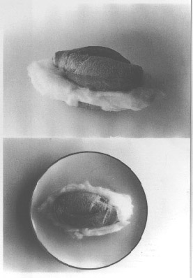
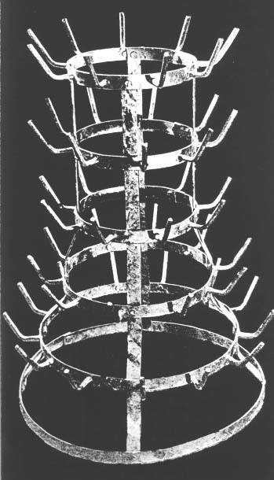
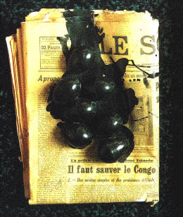
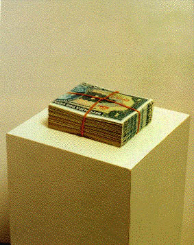
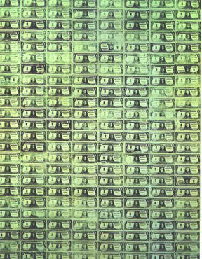

by Raul Zamudio
|
In 1976 which was four years after the art object had "dematerialized," the Brazilian artist Cildo Meireles crystalized it in a work entitled Knowing Can Be Destroying
(Fig. 1). Although Meireles’ growing oeuvre covers a wide array of media, the works that this essay will address were executed in the mid- to late 60s and operate in the mode of the (assisted) readymade. The reasons for this particular focus are both historical and theoretical. One reason concerns exhibitions mounted in 1966 receptive to art involved with process that articulated in conceptual and formally innovative registers consequently interrogating its ontology by privileging the ideational over the object. Also of importance during this time were works that feigned exhibition status and conversely, exhibitions that were atomized and possibly mistaken for art itself: Mel Bochner’s Working Drawings And Other Visible Things On Paper Not Necessarily Meant To Be Viewed As Art (1966) and the exhibition January 5-31, 1969. Both of these projects continued art’s formal and conceptual transformation to a heightened degree of critical self-reflexivity that implicated the museum as an ideological component of a larger sociopolitical constellation. An awareness of the institution’s ideological infrastructure as locus of contestation is alluded to in the curatorial framework of January 5-31, 1969. Its curator Seth Siegelaub stated that "the exhibition consists of (the ideas communicated in) the catalog; the presence (of the work) is supplementary to the catalog." 1 Another reason for the history that this paper brackets has to do with Duchamp’s third reemergence in the history of post-war American art in the late 60s and what I construe as Meireles’ theoretical expansion of the readymade. |
|
Duchamp’s first reception concerned his importance for Jasper Johns and Robert Rauschenberg. The second appearance-reflected institutionally in Duchamp’s retrospective in Pasadena in 1963-was the readymade’s influence on Pop art when Pop was at its apogee.2 Pop subsumed the readymade through its visual affiliation with consumer culture and like an apparition, the readymade including its theoretical linchpin of institutional critique was inadvertently glossed for its formal qualities that appealed to Pop’s aesthetic of surface and sheen. Meireles’ theorization of the readymade referenced Pop’s ostensible apolitical framing of it as socially disengaged signifier. Pop art’s paradoxical nature was noted in 1963 by the Argentinean critic Rafael Squirru: the characteristic difference between the attitudes of [Pop] artists in North and South America[is that in] Latin America there is an extra-aesthetic accent present in the form of social and political commentary. In the United States the accent is on the objects themselves, accepted as part of the artist’s real world and to which he wishes to give the magic stamp of art.3 Squirru’s poignant observation is something that could have been said about certain strains of Conceptualism. Consequently what I will underscore in this essay is not only how Meireles’ readymades had this "extra aesthetic accent," but I also want to highlight their formal strategies in order to supplement readings of his work that privilege social history over form. For it seems that for some Conceptual artists, form was a major factor in Conceptualism’s criticality that would help reiterate what they sought to sever. This is evident in Duchamp’s third appearance in post-war Am erican art. Specifically in Joseph Kosuth’s One and Five Clocks (1965) and in specific variations of his Art as Idea as Idea series. The readymade was not about superceding form to idea, although Kosuth could tautologically arrive at his Art as Idea as Idea postulation through Duchamp’s notion of the readymade as a "work of art that is not a work of art."4 The former deploys a synchronic rhetorical doubling akin to a self-referential, enclosed and socially autonomous formalism that Conceptual art initially contested. Duchamp's formulation of the readymade incorporates a similar semantic device, but it alludes to something outside of itself by dialectically negating what it is/not. The theoretical gist of the readymade, however, was not contingent on the "artist’s intention" as positivist analogue to "logic and mathematics" as Kosuth had posited, but on the artist’s annihilation.5 Meireles undermined intentionality by emphasizing less the readymade’s death of the author trope, but by embedding the readymade dialogically to the social and political terrain of which art is a part. The germination of such concerns is already evident in an early work entitled A Very White Sandwich (1966) (Fig. 2). In 1966, while exhibitions such as Art in Process: The Visual Development of Structures, Systemic Painting, and Primary Structures hinted at the positivist direction that some forms of advanced art were exploring, Meireles created one of his first works that would signal the heterogeneity and complexity of his practice. By the time of the appearance of A Very White Sandwich, two years had gone by since the Brazilian military regime was in power. It is thus possible that the work was circumventing government censorship by making a "work of art that is not a work of art." Or was it looking at its immediate predecessors such as Nouveau Realisme and Pop or the burgeoning developments in Conceptual art? Or maybe it was emphasizing the linguistic nature of visual representation that Meireles would foreground in a series of works under the rubric of Semantic Objects? More than likely it was all of these possibilities, yet he was working through them in a variety of formal and conceptual modes. Thus the criticality of A Very White Sandwich is articulated through a conflation of the ideational with a critical understanding and reconfiguration of material forms and their previous contexts. In other words, there is a critical formalism in Meireles’work that construes materiality as having a social basis. Such notions of formalism are closer to the pioneering work of the St. Petersburg OPOJAZ group of the early twenties as well as the Prague Circle Structuralists. Here I am thinking, for example, of Jurij Tynjanov who frames the art object as a "system composed of devices whose functions are specified synchronically and diachronically."6 Or of Jan Mukarovsky’s critique of the book The Theory of Prose, where its author discusses the textile industry as an analogy to his literary theories and states that he is more interested in the types of yarn and its weaving. Mukaravosky’s reply to this is that the techniques of weaving reflect the needs and pressures of the market and the law of supply and demand.7 Antithetical to Mukarovsky, is Kosuth’s statement that "work’s of art that try tell us something about the world are bound to fail." By cleaving art form the world, Kosuth is embodying what the OPOJAZ avatar Boris Arvanov had stated in 1923 about the reactionary elements of Russian Formalism: "the extreme right insists on the separation of poetry from praxis."8 Yet this critical formalism was not crucial for Duchamp, for Duchamp referred to this almost off-handedly about one of his readymades in that one can "Simply note that it was a bottle-rack which changed its destination."9(Fig.3). Expanding the notion that the readymade’s effect is dependent on the referent, Duchamp positions its reception in terms of the signifier/signified: "It’s not the visual problem of the readymade which counts: it’s the fact that it even exists. It can exist in your memory."10 An interesting dialectical fissure in the Duchampian readymade is between the linguistic undercurrent operating in it, and its institutional critique that was largely contingent on the ideological exposure of aesthetics. Thus in that historical moment, the readymade’s "antiaesthetic" foregrounded a theoretical emphasis on the readymade’s vacillation between two contextual registers. In the shift between artwork and utilitarian object and/or museum and wine cellar, for example, the Bottle Rack subverts the traditional aesthetic function of art resulting in the "idea of [its] contemplation [to] disappear completely."11 This Duchampian premise is also underscored by Meireles, but he equally underlines the readymade’s formal qualities as well. The genesis of this interplay between form and context, which Meireles will explore in Money Tree and rework in the Insertions into Ideological Circuits series, is already underway if not implicit in A Very White Sandwich. Implicit is the "formal-sociological" register manifesting in the quotidian association of French bread as staple of flavelas that underscores its participation in a broader social dynamic. While this formal/contextual reconfiguration of the readymade is strictly an innovation by Meireles, Meireles may have been influenced by fellow Brazilian artist Helio Oiticica. Oiticica evidences similar concerns in his reference to the social nature of form as expressed in the Parnagole: "I did not want objective apprehension to be taken from the materials out of which the [Parangole] is constituted: e.g., pieces of plastic, cloths, belts, screens, ropes, etc., or from the connection with objects which the works resemble: e.g., tents, banners, etc.… in the architecture of the [flavela,] there is implicitly a Parangole character." 12Similar to the "formal-sociological" meshing of the favela and the Parangole, the vernacular qualities of A Very White Sandwich can never be erased even after its displacement or "change in destination." What was Meireles conveying in a work that is a paradox of the readymade? Particularly in that it was prefabricated not by machine but by the individual hand of the baker, making it simultaneously a unique object and a "multiple." And what of its problematization of the readymade via its poetic conflation of the artist as producer with the laborer/baker as artist? While other artists have worked with food such as Allan Kaprow, for example, Meireles’ use of food is perhaps closer to Marcel Broodthaers’ Le problem noir en Belgique (1963)(Fig. 4).  In that work, Broodthaers incorporates eggs that have been painted black which are placed on a Belgian newspaper announcing political strife in Africa. The black/white of the newspaper is rhythmically offset by the black covered eggs, amounting to two semiotic systems that epistemologically collide within the context of colonialism. A Very White Sandwich also foregrounds a semiotics of consumption: French bread and cotton implies a colonial relationship that is equally about race and center/periphery. Meireles is also referencing the Brazilian historical avant-garde’s inversion of Othering through Oswald de Andrade’s cannabalization of European modernism. Whereas Andrade’s Anthropophagite Manifesto concerned itself with the subsumation of European modernism in the context and discourse of Brazilian national identity, Meireles is changing the registers of that text in wanting the art audience to consume bread and cotton as symbol of the Other.13 Is the reference to the "Very White" in the work’s title a double entendre? Might it refer to the work of Malevich and the Constructivists (via the Neo-Concretists) who were emphasizing the monochrome’s "formal-sociological" basis before the concept gained currency? Or does it critically refer to the High Modernist use of the monochrome as an aesthetic endeavor in its attempted severance from the social? What A Very White Sandwich does signify, however, is what would mark Meireles’ corpus. That is, his deft and metapoetic conflation of form, content, and context that would simultaneously target both the art world and the social and political world in which art is located. This metapoetic device is articulated in Money Tree (1969) (Fig. 5). By 1969 the Brazilian military regime had grown increasingly more repressive and according to Meireles, it "was strictly monitoring all the standards of communication--television, radio, newspapers, book publishing, [and] galleries."14 Brazil was also entering a transnational geopolitical reality of foreign multinational enterprises with subsequent national socioeconomic reverberations. Meireles’ critique embodied in Money Tree was thus not only national in scope, but it traversed various social arenas: international politics and culture, transcontinental commerce and art and its practices and debates. These themes are ciphered in the polysemy of Money Tree. Similar to Knowing Can Be Destroying in its use of textual supplement, contextual information accompanies Money Tree and states: "A bundle of cruzeiro bills bounded by a rubber band that was placed on a conventional sculptural base. Title: 100 one-cruzeiro notes. Price: two thousand cruzeiros. The first project that directly questioned the discrepancy between exchange value and utility value, or between symbolic value and real value." The manifold strategies indicative of Meireles’ corpus converge in Money Tree and operate in high gear: the emphasis that the work be displayed on a "conventional sculptural base" highlights art’s aura and fetishization vis-a-vis institutional reification. Meireles’ use of banknotes also signifies degrees of symbolic and exchange value, yet its very value is concomitantly contingent on fluctuating national and international markets. The result of this tension is that the work expands its critical purview outside the confines of the museum, and into the web of international geopolitics in addressing national and international systems of finance and their philanthropic forays and the privatization of culture. The thread of this web of meaning is the rubber band and the banknotes ensnared by it that trope money growing on trees. Rubber is an important commodity in Brazil as well as a key cultural signifier. The piece underscores rubber exportation and fluctuating international markets that point to something outside of the context of art not for verification as Kosuth had derided, but in critical engagement with transcontinental systems of exchange and culture and Brazil’s colonial past and neocolonial exploitation of resources and labor. Like the Bottle Rack, the work shifts between different contextual registers: on the one hand is its "destination" in a museum with its financial and political constituencies and on the other, is its reference to Brazilian history and economy that is part and parcel of a growing international economic network. In this sense, Money Tree has less of an affinity with the sort of critique of institutions such as the "January" show, and much more attuned with the work of Broodthaers and his investigations of ideological systems of discursive production within the museum. It also calls attention to Hans Haacke’s work on the museum and its relation to the broader sociopolitical world exemplified most poignantly in his MOMA Poll of 1970. The conceptual institutional critique germane to Money Tree becomes much more evident when juxtaposing its with Siegelaub’s North American counterpart. Although the "January" show had displaced receivership for the sake of the "presentation of the artist’s intention" and ideally subverted institutional conventions through the exhibition/catalog format, it inadvertently reiterated what it curatorially contested. It unwittingly achieved this through the exhibition’s location at an east fifty second street office space and its interior simulacra of white collar and white middle class midtown decor. The exhibition, despite the curator’s intention and unlike the work of Broodthaers and Haacke, was subsumed by what it sought to interrogate by not addressing the social and political environment that surrounded it. Paradoxically, then, what amounted to the "January" show’s institutional critique vacillated between the ostensible alternative site of the office space to what Benjamin Buchloh has astutely called the "aesthetic of administration."15 In contrast, Money Tree engages the museum and it can continue to accrue meaning as its sociohistorical contexts change. Not only does Money Tree operate both synchronically and diachronically, but its rising monetary value as an art commodity is part of its critical self-reflexivity and auto-interrogation. Money Tree emphasizes its slippage between its status as an art object and currency that constitutes it at the juncture of culture, geopolitics and global commerce. While it also signifies the continued devaluation of the cruziero in international markets 20 years after its inception, Meireles is also questioning the readymade’s appearance in Conceptual art and Pop. He achieved this through a reconversion of form and context that conflated the ideational and nominal aspects of the Duchampian readymade with Warhol’s popular culture iconography (Fig.6). Meireles reconversion of popular culture is partially situated in what Peter Burger theorized as "perceiv[ing] the positive in the negative."16 The "positive in the negative" is the notion that although in a Greenbergian model popular culture must be deflected from "high art," it is a form of symbolic capital that has an affirmative potential that can be translated from a negative context to a positive one. Warhol's commodity icons circulate to a problematic degree between these two contexts. In order to articulate the relationship between consumerism and its symbiosis with the consumer, Warhol used symbols of commodity and emptied them of their signification. The vacuity of this relationship is foregrounded in Warhol’s signature silk-screen painting. The aesthetic emphasis on the picture plane’s surface subtly accentuates the image’s artifice and depletes its of anything beyond its own intended atrophy. Yet Warhol’s icons concomitantly critiqued and reified the commodification of the subject via the spectacularity of its imagery whose ideological traces remained after recontextualization. This problematic has been noted by Thomas Crow in his analysis of Warhol’s art in that it "fosters a critical or subversive apprehension of mass culture and the power of the image as commodity; and it succumbs in an innocent and telling way to that power."17 Crow’s thesis, which had already been alluded to by Squirru some 30 years earlier, is especially evident if one was to apply Andrade’s anthropophagy to Pop art. For South American artists to "cannibalize" North American Pop at that historical moment would include the partial digestion of consumer culture that may have undermined the "extra aesthetic accent," or it may have resulted in "succumbing" to an ideology antithetical to their projects. Meireles’ devouring of such influences, however, resulted in new configurations of the readymade within the milieu of Conceptual art without foreclosing Conceptualism’s critical impulse. Nonetheless, one can not privilege the social historical in Money Tree or Meireles’ work in general for the sake of its materiality. The readymade in Latin America as Mari Carmen Ramirez has rightly noted, can never be severed form its social context.18 Meireles was conscious of the readymade’s prior incarnation and exploited it to critical and poetic ends. He was also very much engaged with formal issues like his transcontinental counterparts, regardless of his exclusion from concomitant discourse at the time of his emergence. “Knowing Can Be Destroying” could be the epilogue to Meireles’ participation in the historical trajectory known as Conceptual art, and maybe even a critically perverse signaling of that era’s demise. Given the reference to epistemic violence in its title, it can also be construed today as an allegory of the historical effacement of Meireles and his South American contemporaries engaged in Conceptualist endeavors. This is evident in the glossing of such important artists as Lygia Pape, Lygia Clarke, Mira Schendel, Helio Oiticica, and Victor Grippo. What is crucial at this historical juncture is a reconsideration of their production as well as their place in Conceptual art. I am not referring to a revision that incorporates them and ascribes them a place in the canon, but rather a critical reflection that challenges and potentially undermines exclusionary and hegemonic narratives. A reconsideration such as this would involve, as Jochen Schulte-Sasse has stated, "Ruptures that would allow [an] intervening practice."19 In this sense, the task of the critic and historian is not one of appraisal, biography and narrative production, but of interventional praxis in order to contest an ahistorical consciousness wherein not knowing, can be destroying as well. |